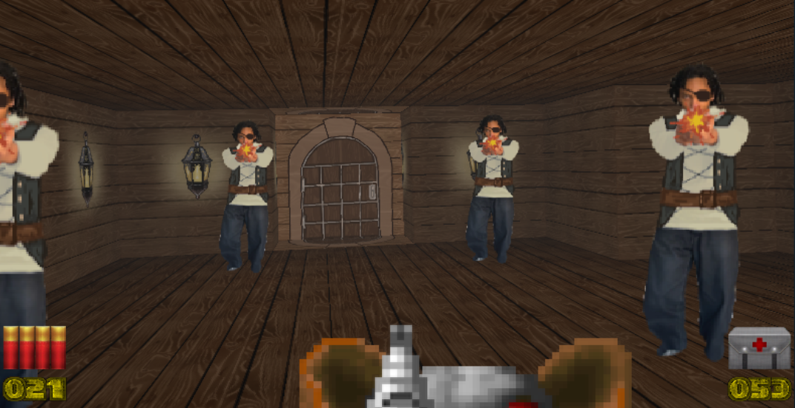
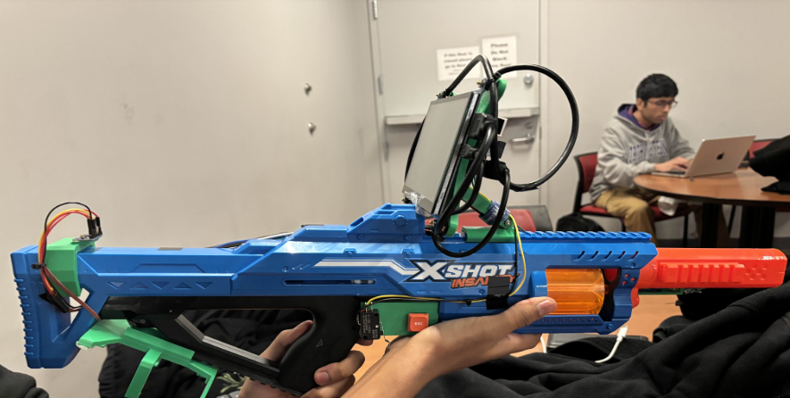

Sea-DOOM


Sea-DOOM is an immersive, customizable take on retro gaming, inspired by DOOM and designed to bring VR-like gameplay without expensive equipment. Built with Python, PyGame, and OpenGL, it uses raycasting and raytracing to create a dynamic, interactive shooting experience. Players control the game with a real gun-like interface featuring a digital screen, a Raspberry Pi, and an accelerometer for tilt, rotation, and movement tracking. The game is fully open-source, with hand-drawn sprites and customizable levels created in Tiled. With a total cost of just $100, Sea-DOOM makes immersive gaming affordable, accessible, and endlessly customizable.
OpenGL
Raspberry Pi
PyTMX
Raytracing
PyGame
Tiled